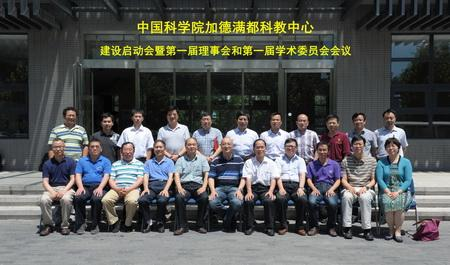

The kick-off meeting of CAS Kathmandu Center was held on July 3 at ITP. The meeting was jointly organized with
the Center’s 1st administrative committee meeting and the 1st academic committee meeting. QIU Huasheng, member of
administrative committee and the deputy-director of Bureau of International Cooperation, chaired the joint
meeting. XU Ruiming, member of administrative committee and the director of Bureau of Frontier Sciences and
Education, awarded the letter of appointment to the Center’s administrative committee members.
In the keynote speech, Prof. YAO Tandong, director of the Center, suggested that an alliance of Belt and Road
oversea research and education centers can be formed based on the existing established CAS Kathmandu Center,
Central Asia Research Center for Ecology and Environmental Sciences and China-Sri Lanka research and education
center. The alliance can not only act as a platform for earth sciences research, but also a think tank for the
implementation of the national major strategies. Prof. LIANG Eryuan, executive director of CAS Kathmandu Center,
briefed the significance and construction history of the Center and reported the recent progress and upcoming
activities of the Center. Prof. ZHAO Ping, deputy director of ITP, supporting institution of the Center,
reported the recent progress on the Center’s infrastructure construction. QIU Huasheng introduced the overall
layout of CAS oversea centers. XIE Yong, head of International Cooperation Department of UCAS, gave an overview
of foreign students and scholarships in CAS.
The following discussions were focused on how to further develop the CAS Kathmandu Center. All attendees agreed
that CAS Kathmandu Center focus on the frontier sciences, and the construction of the Center is well fit the
Belt and Road national strategy. The attendees also agreed that carrying out science and education cooperation
with south Asian countries, such as Nepal, can serve for the development of multi- disciplinary research in CAS
and capacity building in south Asian countries.
Almost 50 participants, including administrative and academic committee members, officials from Bureau of
International Cooperation and staff from the supporting institution of the Center, attended the meeting.
